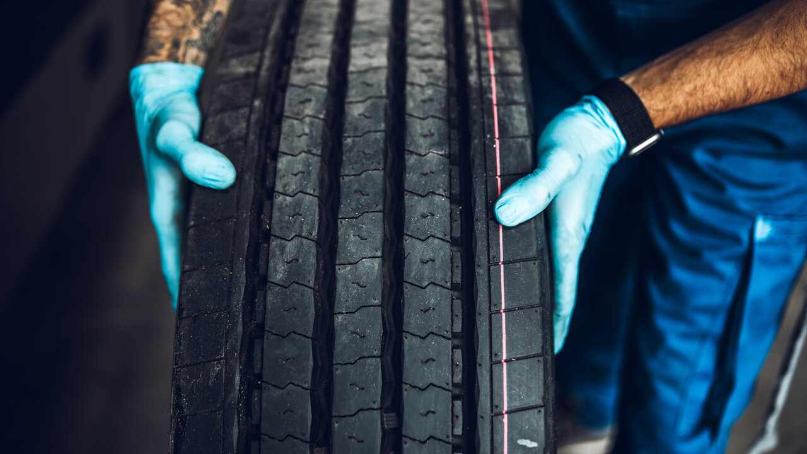

Home / Blog / Casing Moisture and Pre-Drying
PROCESS GUIDEHow moisture costs a retread line casings, through blows during curing and rust in the steel belts, what TRMG's guidance says about pre-drying and wet injuries, and where moisture control fits from receiving to building.
Published November 25, 2026 · Good Hope Retreaders

Water is one of the quieter ways a retread line loses casings. A casing that comes in wet, or carries moisture inside an injury, can look fine at the spreader and still fail at the curing chamber or on the road. The retread industry's own technical vocabulary has terms for this: pre-drying, dryer and moisture blows. If you're running your own line, they belong in your process sheet.
This guide covers what the industry guidance says about moisture, how it gets into a casing, and where drying fits in the flow from receiving to curing. It sticks to what published sources support. Exact drying times and temperatures depend on your equipment and materials, so take those from your material supplier's process specifications.
The Tread Rubber and Tire Repair Materials Manufacturers' Group (TRMG), published through the Tire Industry Association, maintains a glossary of retread and repair terms. Several entries deal directly with moisture:
TRMG's repair guidance adds two rules that matter here. Tires showing moisture in injured areas must be thoroughly dried. Tires with separation between belt plies must be rejected.
Notice where the glossary puts drying: before inspection and processing. Drying isn't a fix applied at the end. It's a preparation step, so that the casing you inspect and build on is the casing that goes into the chamber.
Curing heats the whole casing. Any water trapped in an injury channel or between components expands, and TRMG's definition is explicit that the result is a ply separation. You've then spent buffing time, tread rubber, cushion gum and a chamber slot on a tire that fails final inspection. Our guide to final inspection after curing covers what to look for, and our curing chamber comparison covers the heat side of the process.
The slower loss happens on the truck, long before the tire reaches your shop. Trade press on fleet tire maintenance makes the same point repeatedly: a puncture should be repaired as soon as possible after it's found, so moisture doesn't wick into the belts and ruin the casing. One trucking article notes that a cut into the steel belts doesn't necessarily disqualify a tire for retreading, but if exposed steel is left in service even for a few days, rust can migrate into the tire and make it unusable. A school bus fleet maintenance article makes a similar point about improper repairs: a quick external patch, a sealant or a rivet-type plug can let moisture in and lead to rust that destroys the steel belt.
A belt that has rusted and separated falls under TRMG's rule that belt-ply separations are rejected. Drying can't undo that.
Here's how we'd build moisture into an in-house process. It's our own synthesis of the guidance above, not an official standard:
An in-house line gives a fleet something an outside retreader can't: control over how casings are treated on the road. The guidance above points to a few policies that keep water out of the steel:
Good Hope supplies retreading machinery, including inspection spreaders, skiving stations and curing chambers, plus the consumables and repair tools to prepare and repair casings properly. We're manufacturer-direct with local Ontario service, and we equip and supply fleets that run their own retread lines.
Tell us your casing volume and sizes. We'll quote inspection, repair and curing equipment as one transparent, all-in Canadian price, with local Ontario service included.
Get an equipment quote →Send us your requirements and we'll get back to you within 24 hours with pricing and lead times — no obligation.